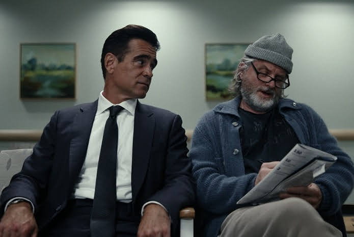

Sugar — Temporada 2
John Sugar sigue aprendiendo a ser humano mientras la historia que hay detrás se vuelve cada vez más interesante

Terminé la segunda temporada de Sugar y la sensación es la misma que tuve el año pasado: la serie sorpresa de 2024 sigue en el mismo nivel, o incluso un poco mejor.
El caso de esta temporada funciona muy bien. Vuelve ese tono de misterio que ya conocíamos de la primera entrega, con Sugar metido de lleno en otra investigación, y esta vez el caso me ha convencido de principio a fin. No hay altibajos ni momentos en los que sienta que la trama se estanca. Va avanzando bien, capítulo a capítulo.
Pero lo que de verdad me tiene enganchado es la trama de fondo. Apenas ocupa unos minutos por episodio, casi de forma discreta, como si la serie no quisiera que le prestaras demasiada atención todavía. Va soltando información con cuentagotas, un detalle aquí, una escena allá, y precisamente por eso funciona tan bien. Nunca se siente forzada, y sin embargo cada vez interesa más, hasta llegar al último episodio, donde toda esa acumulación de pequeños momentos por fin tiene espacio para desarrollarse.
Colin Farrell sigue construyendo a John Sugar con muchísima humanidad. Y aquí está una de las cosas que más me ha gustado de esta temporada: el personaje va pareciendo cada vez más humano, como si poco a poco la humanidad lo fuera asimilando. Es una evolución que se nota en gestos pequeños, en cómo reacciona, en cómo se relaciona con los demás. Farrell transmite muy bien ese cambio, sin subrayarlo. Basta con mirarlo en según qué escenas para notar que ya no es exactamente el mismo Sugar que conocimos en la primera temporada.
Mireille Enos entra esta temporada como la hermana desaparecida de Sugar y me ha gustado mucho. Encaja bien con el tono general de la serie. También quiero destacar a Sasha Calle y a Shea Whigham, que se incorporan al reparto de esta temporada y le dan buen apoyo a la historia.

En conjunto, me ha gustado más o menos igual que la primera temporada, que ya es decir bastante. Aquí no hay ningún bajón ni ninguna sensación de que la serie se haya quedado sin ideas. El caso funciona, la trama de fondo cada vez interesa más y me gusta cómo va evolucionando Sugar. No le pongo ninguna pega especial esta vez.
Ahora solo queda esperar. Quiero que la renueven. Estoy rezando al diosito de las series para que haya una tercera temporada.
Ficha técnica
- Creada por: Mark Protosevich
- Showrunner: Sam Catlin
- Reparto principal: Colin Farrell, Mireille Enos, Sasha Calle, Shea Whigham, Jin Ha, Laura Donnelly, Tony Dalton, Raymond Lee
- Temporadas: 2
- Plataforma (España): Apple TV+